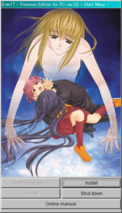
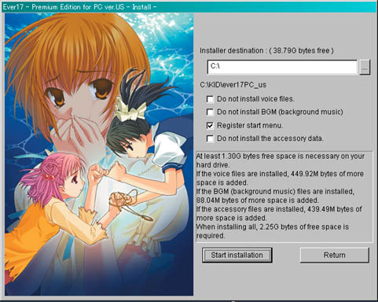
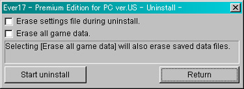
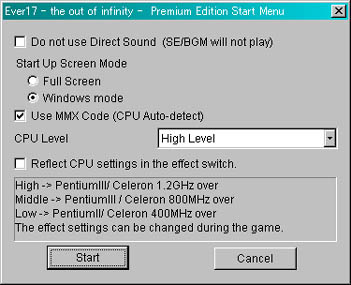

Ever17 - the out of infinity -
Premium Edition
- Operating Environment -
| Operating Environment |
| OS |
Windows98SE / ME / 2000 / XP |
| CPU |
PentiumIII/Celeron 400MHz or above (1.2GHz or above recommended) |
| Memory |
Memory of 128MB or more (256MB or above recommended) |
| Monitor |
800 x 600 or above 16bit color or above (24bit color or above recommended) |
| HDD |
2.25GB or above * Without Voice and BGM data - 1.3GB or more |
- Installer -
When you place the disc in the CD drive, the set up program will start up.
(In case it does not start up, open the My Computer icon on the desktop,
open the drive in which you have set your disk and please double click on setup.exe.)
Please select the Installer from the Start Menu.
For the following commands please follow the instructions on the screen.
- Start up game -
When you place your disc into your CD drive, the set up program will start and the start menu will be displayed.
(In case it does not start, open the My Computer icon on the desktop
, open the drive in which you have set your disk and please double click on setup.exe.)
|  |
+Starting the game
Once the game is installed, you will be able to select to start the game from the menu at which point the game will begin.
+Install
To install the game for the first time, or to install a segment of data that has not been installed, please click on the additional installer.
+Uninstall
To remove the installed game from a hard disk.
+Shut down
To shut down the menu.
+Online manual
To start up the online manual.
*If the game is not installed, you will not be able to select Start game or Uninstall.
|

+Installer destination
You can select where you would like the game to be installed. This game requires a minimum of 1.3GB of space and a maximum of 2.25GB. Please make sure that there is adequate space in the drive that you select to install the game.
During installation a message will appear asking you to switch discs. Please do so.
+Do not install Voice
If you check this box, installation will take place without sound being installed.
Without sound installation, the required memory will decrease by approximately 450 MB. However, the game will not feature sound.
+Do not install BGM data
If you check this box, you can opt for installation without the BGM data.
When you install BGM data, you can play BGM without Disc 4. To install BGM data, you will need an additional 8804MB of space. In certain cases, running the game using BGM data without sufficient memory will significantly reduce the operating speed.
Even if you do install the BGM data, you will still be able to play BGM from CD Disc 4.
*Even without installing the BGM data, BGM can be played by inserting Disc 4 into the CD drive.
+Register start menu
When you check this box, the game icon will appear in the Windows start menu.
+Do not install the accessory data
This will not install the accessory data (system voice, wallpaper, screen saver). By not installing this data, you will save 440MB of space.
*Even without installing the accessory data, you can download the accessory data by inserting Disc 3 into the CD Drive.
+Start installation
Click here to start the installation. During the installation, when directed to switch discs, please insert the designated disc into the CD drive. |
|  |
+Erase setting file
When starting up the game, this removes the game setting files and uninstalls the game simultaneously.
+Erase all game data
This will remove saved data as well as files installed for the game.
+Start uninstall
Click here to initiate uninstall. |
- Starting up the game -
After installing the game, select Start game from the start menu and the game will start up.
If you have registered the game in your start menu, you can also run the program by selecting [Program] ->[Ever17] -> [Ever17]
When you start up the game, the Start Menu will be displayed.
+Do not use DirectSound
When trouble occurs during start up, please try to check this item.
By checking it, SE, sound will not be played.
(This will also disable BGM data from being played.)
+Start Up Screen Mode
Designate the start up screen when the game begins.
+Use MMX Code
If trouble occurs when starting up due to a CPU that does not accommodate MMX, please uncheck this box.
+CPU Level
Depending on your CPU's processing speed, you can change the effects settings on your option menu.
When using the game, if your CPU is Pentium/Celeron1.2GHz or above, set it at the High Level
For a Pentium/Celeron 800MHz or above, the Middle Level
For a Pentium/Celeron 400MHz or above, the Low Level
When starting up the program for the first time, your CPU information will automatically be detected and set to the appropriate level.
+Reflect the CPU setting in the effect switch
Reflect the CPU setting in the effect switch.
During the initial game start up, this check will automatically switch on.
When you check Reflect the CPU setting in the effect switch setting, the effect at Low Level will disable synchronized Voice, Middle Level will turn all effects on, apart from the Flicker Effect and the synchronized Voice off, while the High Level will turn on all effects and turn on the synchronized Voice.
At any time during the game, you can change the CPU in use for effects settings via Options Menu.
|
 |
- Explanation of game operations -
| Basic operations |
| Fast forward Message |
Left button/Enter |
| Select Menu |
Left button/Up and Down key and then Enter |
| Open pop-up menu |
Right button/Space |
| Cancel |
Right button/Esc/Space |
| Switch to Re-read |
Click Scroll Wheel button/Page Up/Page Down |
| Re-read scroll |
(by unit) Rotate mouse scroll wheel : Page Up/Page Down : (1 line) Up and Down key |
| Fast forward message |
Ctrl |
| Skip to Movie |
Right button/Space |
| Keyboard shortcut functions |
| AutoMode ON/OFF |
F1 |
| Remove message window |
F2 |
| Skip Mode ON/OFF |
F3 |
| Open Save Menu |
*F6 |
| Open Load Menu |
*F7 |
| Open Option Menu |
F8 |
| Change screen mode |
Alt+Enter |
| Quit game |
Alt+F4 |
*The Save/Load Menus are only available at story plot branches
- Pop-up menu -
You can open the Menu during the game by right clicking (or holding down the space bar). This will not be displayed during the Title Menu.
| Return |
Close menu |
| File menu |
Save (F6) |
Open Save Menu |
| Load (F7) |
Open Load Menu |
| Quick save |
You can save up to five times without opening the Save Menu. |
| Quick load |
Load data that has been quick saved. |
| Load auto-save |
Load data that has been saved using the auto-save function. Up to five places can be saved. |
| Option menu (F8) |
Open option menu |
| Quick Setting menu |
Display the menu for quick setting.Switch*menu items to display/non-display. |
| Screen Mode (Alt+Enter) |
Switch the Screen Mode (Full screen, window mode) |
| *Screen effect |
Fade |
To set the effects to determine whether or not CG will be displayed. |
| Display Screen Shaking |
Effect To set whether or not the Screen Shaking Effect will be displayed. |
| Sunlight Through Trees |
Effect Display To set whether or not the Sunlight Through Trees Effect will be displayed |
| Display Flicker Effect |
To set whether or not Flicker Effect will be displayed. |
| Display Mist Effect |
To set whether or not the Mist Effect will be displayed. |
| Display Precipitation Effect |
To set whether or not the snow and flower effects will be displayed. |
| Expand or reduce background |
To set whether or not the background will be expanded or reduced |
| *Message speed |
To set the speed at which messages will be displayed. One is the slowest. Four is the fastest. |
| *Message skip mode |
Skip messages that have been read |
Skip messages that have only been read once |
| Skip All |
To skip all messages, regardless of whether they have been read or not. |
| *Message skip option |
Disable the skip mode by selecting |
Once the selected message is arrived at the skip mode will automatically be turned off |
| Do not disable skip mode with selection |
This will not disable the skip mode when a plot branch choice comes. |
| *Synchronize message Voice |
Synchronize Voice |
Coordinate lines with Voice with the speed of messages displayed. |
| Don't synchronize Voice |
Display all messages at set speed. |
| *Transparency of message window |
The clearness of the message window can be set. One is the clearest. Four is the most opaque. |
| *Message AutoMode (F1) |
A speed setup in message auto mode can be performed. 0 is OFF and 3 is the fastest. A speed setup will be set to 2 if it is made auto mode by F1. |
| *BGM Volume |
This sets the BGM volume. Zero turns the volume off. Three is the maximum volume. |
| *SE Volume |
This sets the SE volume. Zero turns the volume off. Three is the maximum volume. |
| *Voice Volume |
This sets the Voice volume. Zero turns the volume off. Three is the maximum volume. |
| Skip until the next plot selection (F3) |
To set skip mode. (To skip messages until the next plot selection is reached. |
| Remove Window (F2) |
To temporarily remove the message window. |
| Return to Title Screen |
To return to the title screen. |
| Quit Game (Alt+F4) |
To end game. |
- Title Menu -
| New Game |
To start game from the beginning. |
| Continue |
To start game from where data was saved. |
| Option |
To open the Option Menu. |
| Special |
To open the six menus below. |
| Short Cut |
If you meet the necessary conditions, you can start playing from the middle of the game. |
| Jukebox |
You can listen to BGM while playing the game.
(If you are not set up to play BGM, then it will not be played.) |
| AlbumÅïWall Paper |
You can enjoy the CG viewed during the game. Moreover, you can download registered CG data. |
| Screen Saver |
You can download a screen saver. |
| System Voice |
You can down load system voices. |
| Clear List |
You can check how much of the game you have completed. |
| Exit |
To end the game. |
- Option Menu -
| Screen Effects |
Fade |
To set whether or not effects will appear when CG are displayed. |
| Screen Shaking |
To set whether or not the Screen Shaking Effect will appear. |
| Sunlight Through Tree |
To set whether or not the Sunlight Through Trees Effect will appear. |
| Flicker |
To set whether or not the Flicker Effect will appear. |
| Mist |
To set whether or not the Mist Effect will appear. |
| Precipitation Effect |
To set whether or not the snow and flower effects will be displayed. |
| Expand or reduce background |
To set whether or not the background will be expanded or reduced. |
| Message Settings |
Message Speed |
To set the message speed. One is the slowest, while four is the fastest. |
| Skip Mode |
To set the skip mode. You can select Already read or All. |
| Remove Plot Selection Skip |
To undo the selection skip setting. You can select from Skip is released or it doesn't do.. |
| Synchronize Voice |
To synchronize Voice and dialogue. You can select from Synchronize or Do not synchronize. |
| Window Transparency |
To set the clarity of the message window. One is the clearest. Four is the most opaque. |
| Sound Settings |
BGM |
This can be used to set the BGM volume. Zero turns the volume off. Three is the maximum volume. |
| SE |
This sets the SE volume. Zero turns the volume off. Three is the maximum volume. |
| Voice |
This sets the Voice volume. Zero turns the volume off. Three is the maximum volume. |
- Wallpaper Settings -
| 1. |
|
Select [Album Åï Wallpaper] from the [Special] category.
Select the character of your choice and click on the thumbnail image.
By right clicking when the CG is displayed, you can choose to save the CG in a small, medium or large size.
After selecting the size you can decide in which folder you would like to save the file.
The CG will be saved as jpg data in the file selected. |
| 2. |
|
Next, select Control Panel from My Computer.
*The Control Panel can be found inside the Start Menu. Please proceed from [Start] Å® [Settings]Å®[Control Panel]. |
| 3. |
|
From the Control Panel please select [Display Properties]. |
| 4. |
|
Click on the background tab in [Display Properties]. |
| 5. |
|
Click on Browse and select the image you just saved and click inside that image. Next click Open. |
| 6. |
|
Click OK on the [Display Properties]screen and the wallpaper is registered. |
| 7. |
|
The number of CG that you can set as wallpaper will increase as you progress through the game.
CG that have appeared in the game even once will be registered as Album Åï Wallpaper. |
- Setting the Screen Saver -
| 1. |
|
Select "Screen Saver" from the "Special" category. When you do this,
all possible screen savers will be displayed. Select and click upon the saved screen saver. You will then be able to save the folder.
Designate where you would like it saved. When this command is complete,
scr data will be saved in the folder you selected. |
| 2. |
|
Next, right click on the saved [.scr] file and select the [Installer] inside the pop up menu. |
| 3. |
|
This will call up the [Screen Properties ]. Select [OK] from the PC no operation time for starting up the screen saver.
This concludes the setting of the screen saver. |
| 4. |
|
As you clear your way through the game, the number of screen savers you can select will increase. |
- Setting System Voices -
Here we explain how to change the start up sound of Windows.
For Windows98/98SE/ME
For Windows2000
For WindowsXP
| 1. |
|
Select System Voice from the Special category.
Select the character of your choice and the system voices available for you to use will be displayed. |
| 2. |
|
Select the system voice of your choice and right click on it-> select save and select the destination folder. |
| 3. |
|
Next, there is a folder called MEDIA in the WINDOWS folder in the C Drive. Put the sound folder that you just saved inside it |
| 4. |
|
Call up the Control Panel from the My Computer folder.
*Select the Control Panel form the Start Menu.
Please proceed in the following order: [Start]Å®[Settings]Å®[Control Panel]. |
| 5. |
|
Select and open [Sound] in the Control Panel. |
| 6. |
|
Open [Sound] folder and select the sound tab. Clickon the Windows start up sound.
Next, click on [Browse].
This will display the sound files saved inside MEDIA so that you can select the sound of your choice.
Click [OK] to conclude and set the sound as your Windows start up sound. This concludes the setting of the system voice. |
| 1. |
|
Select System Voice from the Special category.
Select the character of your choice and the system voices available for you to use will be displayed. |
| 2. |
|
Select the system voice of your choice and right click on it-> select save and select the destination folder. |
| 3. |
|
Inside your C Drive is a folder called WINNT inside of which is a folder called Media. Place the sound you just saved inside of it. |
| 4. |
|
Call up the Control Panel from the My Computer folder.
*Select the Control Panel form the Start Menu.
Please proceed in the following order: [Start]Å®[Settings]Å®[Control Panel]. |
| 5. |
|
Select and open the [Sound and Multimedia] from inside the Control Panel. |
| 6. |
|
Open "Sound and Multimedia" and select the sound tab. Click on Windows start up sound.
Next, click on [Browse].
This will display the sound files saved inside MEDIA so that you can select the sound of your choice.
Click [OK] to conclude and set the sound as your Windows start up sound. This concludes the setting of the system voice. |
| 1. |
|
Select System Voice from the Special category.
Select the character of your choice and the system voices available for you to use will be displayed. |
| 2. |
|
Select the system voice of your choice and right click on it-> select save and select the destination folder. |
| 3. |
|
Inside your C Drive is a folder called WINNT inside of which is a folder called Media. Place the sound you just saved inside of it. |
| 4. |
|
Call up the Control Panel from the My Computer folder.
*Select the Control Panel form the Start Menu.
Please proceed in the following order: [Start]Å®[Settings]Å®[Control Panel]. |
| 5. |
|
Select the [Sound, Voice and Audio Device] from inside the Control Panel.
*In the case of classic display, select the [Sound and Audio Device Properties]from inside the control panel. |
| 6. |
|
Open the [Sound and Audio Device Properties]and select the sound tab. Click on Windows start up sound.
Next, click on [Browse].
This will display the sound files saved inside MEDIA so that you can select the sound of your choice.
Click [OK] to conclude and set the sound as your Windows start up sound. This concludes the setting of the system voice. |
|